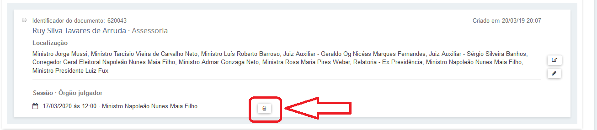
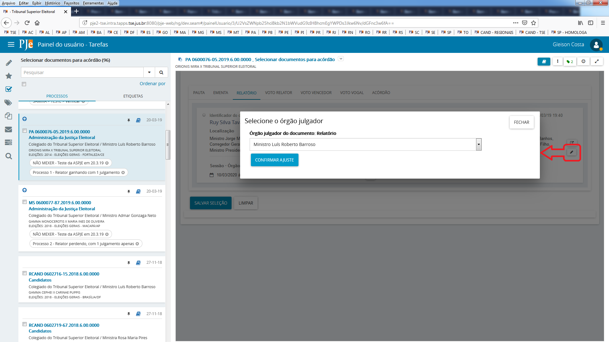
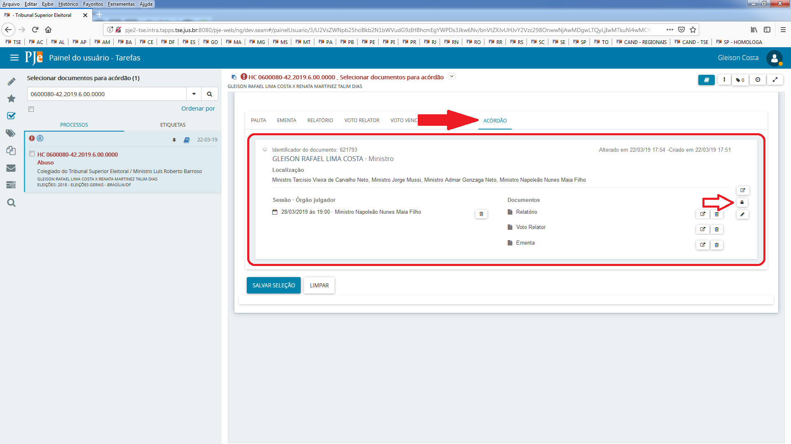
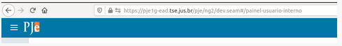
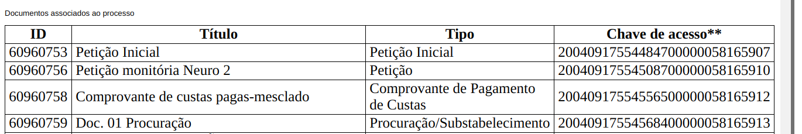

- Cache do navegador
- Como limpar memória local do navegador (cache do browser)
- Esqueci minha senha e senha bloqueada
- Documentos não lidos
- Juiz substituto - sigilo
- Publicar em sessão
- Intimação de pauta
- Problemas com sessão na 2.0
- Documentos da sessão
- Selecionar documento para acórdão
- Perfil de consulta
- Prazo em horas
- Remessa entre instâncias
- Remessa a outra jurisdição
- Artigo 260 no PJe
- Definir revisor
- Situação do advogado
- Inativo, baixado, suspenso
- Intimação sistema - defensoria
- Máscara - classe
- Sobre distribuição e pesos
- Audiências
- Unificação de pessoas
- Publicações no DJe – sigilo
- Carta Precatória
- Minutar em lote
- Caixas de procuradores
- Filtros - procurador
- Disponibilizando chaves de acesso aos documentos
- Meio de comunicação Telefone
- Variáveis de modelo
- Papel para cadastrar etiqueta
- Erros de remessa que podem ser corrigidos pelo usuário
- Distribuição de processos: Abas Criminais
- Documentos que acionam o fluxo de petição avulsa no 1º grau
- Como Cadastrar o Ministério Público, Zonas Eleitorais e Tribunais Regionais Eleitorais nos processos:
- Manual de sigilo PJe
Cache do navegador
Muitas funcionalidades do PJe executam na própria máquina do usuário, e aí ficam alguns registros da funcionalidade guardados na memória da própria estação. Quando há atualização dessas funcionalidades, deve-se limpar a memória local para que as atualizações sejam recuperadas. Essa memória local é também chamada de cache do browser ou cache do navegador. Executar funcionalidades na máquina do usuário é uma tendência das aplicações web, com o objetivo de diminuir a dependência da capacidade de processamento dos servidores.
Como limpar memória local do navegador (cache do browser)
Acesse, no navegador, o ícone que fica no canto superior direito que contém três tracinhos horizontais Selecione Preferências Selecione o painel Privacidade e Segurança. Na seção "Histórico", tem um botão "Limpar histórico" Acione o botão e selecione a opção "tudo" com a marcação "cache", em seguida confirmando a limpeza. Atualize a página do PJe. Segue o sítio que contém essas orientações que passei sobre a limpeza do histórico: https://support.mozilla.org/pt-BR/kb/como-limpar-cache-firefox
Esqueci minha senha e senha bloqueada
Por vezes o servidor gera uma nova senha para o usuário, que recebe um link para cadastrar uma nova senha em seu email. Ao acessar esse link, o usuário finaliza o cadastramento mas o sistema sinaliza que a senha está bloqueada. Nesses casos, o desbloqueio só ocorre se for utilizada a opção esqueci minha senha pelo próprio usuário. Ao passar essa orientação, o usuário às vezes tenta segui-la, mas se atrapalha com outros emails enviados com links de geração de senha e o problema não se resolve. Recomendamos fazer, então, o seguinte:
1) Vai no cadastro da pessoa física, troca o email do usuário e coloca o seu próprio email 2) Em seguida, vá na tela inicial do pje e clique no link "esqueci minha senha". Na Tela aberta, digite o CPF do usuário e o seu e-mail 3) Acesse novamente seu e-mail para abrir o link de redefinição de senha. Você conseguirá cadastrar uma nova senha e desbloquear o cadastro do usuário 4) Por fim, acesse novamente o cadastro do usuário e substitua o seu e-mail pelo email original da pessoa e clique no botão para gerar novo link de cadastro de senha para que ela possa gerar uma nova senha.
Documentos não lidos
O PJe tem um controle bem antigo para sinalizar ao servidor que documentos novos foram incluídos pelo usuário externo. A possibilidade de se iniciar fluxo de petição avulsa nem sempre existiu e o controle era feito anteriormente por essa opção.
Esse controle é só um aviso, ele não impede o usuário de ver o documento.
Para que o aviso não seja mais exibido, o usuário sinaliza que já viu o documento, mas não significa que ele efetivamente foi visto. Pode-se marcar que o documento foi lido sem nem ter aberto o documento. A marcação significa que o usuário quer que o aviso desapareça. Se o usuário abrir o documento, mas não marcar que já viu, o sistema vai continuar exibindo que há documentos não lidos.
Esse aviso era exibido apenas por meio de um agrupador, que não utilizamos muito na Justiça Eleitoral, já que são muito onerosos para a performance. Todos os agrupadores são muito onerosos.
Outros tribunais utilizam bastante e queriam que o aviso aparecesse nos autos do processo.
Por isso apareceu essa novidade, a partir da versão 2.1.2.6.
Quando entrou em produção, como nunca utilizamos, todos os processos com documentos protocolados pelo usuário externo exibirão nos autos o aviso de documentos não lidos.
Mais informações sobre o comportamento da opção:
http://www.pje.jus.br/wiki/index.php/Funcionalidades#Processos_com_documentos_n.C3.A3o_lidos
Juiz substituto - sigilo
Atuação de juiz substituto em processo sigiloso na zona
Exemplo de situação: O juiz de uma zona especializada (002ZE) se declarou suspeito.
Foi designado para atuar no processo o juiz titular da outra especializada (003ZE).
No sistema, para que cada zona concorra em igualdade de condições, e também porque não existe dois juízes ativos concomitantemente no mesmo juízo eleitoral, a distribuição foi configurada apenas com o cargo de juiz titular respondendo “Sim” para “recebe distribuição”.
Logo, esse processo em que ele se declarou suspeito foi distribuído para o cargo de juiz eleitoral titular.
O que pode ser feito para que o juiz designado não visualize os demais processos sigilosos (inclusive com nível 5) e enxergue apenas o feito para o qual ele foi indicado?
Resposta: Configurar a visibilidade do juiz substituto só pro cargo dele e adiciona ele como visualizador do processo. Ele terá acesso ao processo porque é visualizador e terá acesso às tarefas porque é juiz.
Resumo: se cadastrar um juiz no cargo Juiz Eleitoral Designado, limitar a visibilidade dele apenas a esse cargo e acrescentar seu cpf como visualizador do processo sigiloso, ele vai visualizar o processo na tarefa minutar ato, assim como o Juiz titular, mesmo que o processo seja nível 5.
Publicar em sessão
Sobre publicação do acórdão em sessão, a partir da mesma opção pode-se publicar o acórdão ou a certidão de julgamento. Os documentos só aparecerão se estiverem devidamente vinculados à sessão e se estiverem assinados.
Como assessor de plenário, deve-se ir no menu "Audiência e Sessões" - "Publicação de decisões em sessão"
Ao entrar na tela, ele deve selecionar uma data de sessão e mandar pesquisar. As sessões que tiverem acórdão ou certidão de julgamento associados retornarão na pesquisa.
Depois ele vai preencher, na linha do(s) processo(s) correspondentes que ele quer publicar as opções da publicação: data, tipo do prazo, o prazo em si. Se houver dois documentos, ou seja, o acórdão e a certidão, na coluna Documento ele precisa marcar qual que ele quer. Geralmente a certidão já vem marcada. Os processos que serão publicados devem estar selecionados por meio da caixa de seleção da primeira coluna.
Depois de tudo pronto, ele deve selecionar o botão salvar e depois ele seleciona o publicar
O botão publicar, até a versão 2.0.0.0.71, só habilita quando a url do parâmetro PJE_JE_SERVICOS_WSDL estiver disponível. O erro foi corrigido nas versões posteriores.
Por meio dessa mesma tela, o usuário poderia publicar em sessão decisões monocráticas. Seria o mesmo procedimento, mas para que as decisões aparecessem na consulta, o gabinete teria que ter usado uma tarefa específica sinalizando que a decisão monocrática seria publicada.
Depois de finalizado tudo, o PJe gera uma intimação para as partes envolvidas de acordo com o que foi preenchido. De acordo com parâmetros configurados, ou seja,
-
pje:intimarEmSessaoColegiada:fiscalDaLei - Notifica que o fiscal da lei será intimado nas publicações em sessão de decisões colegiadas
-
pje:intimarEmSessaoMonocratica:fiscalDaLei - Notifica que o fiscal da lei será intimado nas publicações em sessão de decisões monocrátivas
o Ministério Público como fiscal da lei pode não ser intimado. No caso do TSE, ele não é para decisões colegiadas.
Há um defeito conhecido quando a pesquisa retorna muitos processos e o usuário seleciona para publicação processos de páginas posteriores à primeira no resultado da pesquisa. A solução de contorno é restringir a pesquisa de forma que o resultado não venha paginado para evitar o erro na publicação.
Intimação de pauta
Intimação de pauta na publicação da lista e no fechamento da pauta
A publicação de pauta (última aba na Relação de julgamento) no diário utiliza a pessoa Destinatário para ciência pública. A intimação não é gerada para pessoas individuais, já que aquele é um aviso geral da sessão que acontecerá.
As intimações individuais são geradas no fechamento mesmo (primeira aba da Relação de julgamento), ou se você quiser fazer via fluxo do Preparar ato de comunicação. Para inibir as intimações gerais, tem que usar a configuração do Órgão julgador colegiado, onde há um campo indicando a intimação automática da pauta.
Campos na intimação de pauta
No documento de intimação de pauta só funcionam as variáveis listadas na regra abaixo:
http://www.cnj.jus.br/wiki/index.php/Regras_de_neg%C3%B3cio#RN618
A inserção de outras informações pode gerar inconsistência técnica.
A regra é a seguinte:
A publicação da pauta utiliza os processos selecionados pelo usuário na aba Aptos para publicação e monta um documento de acordo com os seguintes parâmetros:
-
Pessoa que será utilizada para registrar ciência quando a publicação ocorrer no DJ conforme configuração do parâmetro pje:fluxo:publicacao:idDestinacaoPessoaCienciaPublica
-
Tipo de processo documento conforme configuração do parâmetro idTipoProcessoDocumentoIntimacaoPauta
-
Modelo de documento conforme configuração do parâmetro idModeloIntimacaoPauta (deve ser usado tanto para o fechamento da pauta quanto para sua publicação)
Para cada processo selecionado, o sistema construirá um documento de acordo com o modelo referenciado, e o utilizará para registrar o ato de comunicação eletronicamente via diário sem prazo para resposta. O movimento de código 60 conforme tabela unificada de movimentos do SGT no CNJ com complemento código 4 com elemento do tipo domínio de código 80 é lançado no processo associado ao documento gerado. Essas configurações de movimento dizem respeito ao registro final no processo "Expedição de outros documentos".
No modelo de documento utilizado nessa funcionalidade, as seguintes variáveis, e apenas elas, estão disponíveis para uso:
processoJudicial, contendo o número do processo;
classeJudicial;
orgaoJulgador;
poloAtivo, contendo a lista de partes do polo ativo com seus respectivos tipos e a lista de advogados que representam partes do polo ativo com seus respectivos números de OAB;
poloPassivo, contendo a lista de partes do polo passivo com seus respectivos tipos e a lista de advogados que representam partes do polo passivo com seus respectivos números de OAB;
localSessao;
dataSessao;
horaSessao;
tipoSessao
Para processos da justiça eleitoral:
estado;
municipio
Problemas com sessão na 2.0
- Fluxo com órgão julgador deslocado temporariamente (substituição por recesso, por exemplo, ou Recurso Extraordinário no TSE) : O órgão julgador responsável não consegue salvar o voto, dá um erro e fica gerando um monte de cópia do voto. Pode-se verificar as cópias no item Documentos dos autos.
O que acontece é que o sistema salva o voto no nome do órgão julgador relator, mas na hora que a tela recarrega, ele tenta recuperar um voto vinculado ao órgão julgador autenticado (que é o deslocado), e não tem.
A solução é alterar o órgão julgador que fará a decisão colegiada antes que seja iniciada a construção dos documentos. Ao final da sessão, depois de assinado o acórdão, o processo pode retornar para o relator original. Foi feita alteração de fluxo para permitir que isso aconteça no TSE.
Se já tiver sido iniciada a construção dos documentos, tem que alterar no banco o órgão julgador do voto que foi salvo pra ser do órgão deslocado e aí os documentos são recuperados.
Na sessão de julgamento, o relator do processo precisará votar como vogal e novamente terá problemas. Para resolver, tem que alterar o órgão julgador responsável pelo processo no banco, deixar o vogal votar, e depois alterar de volta o órgão.
Pode ser que ocorram problemas se for necessário retificar voto de relator deslocado ou desse vogal relator depois do julgamento. A solução é mexer na relatoria por meio do banco novamente, alterando de volta depois.
-
Ao desvincular documento no selecionar documentos para acórdão, em algumas vezes o sistema está apagando o registro do documento na sessão. Esse problema foi corrigido na versão 2.0.0.0.69
-
Ao excluir processo de pauta não fechada, incluir processo em outra pauta e fechar a pauta, o sistema não está vinculando os documentos - resolve com o selecionar documentos para acórdão
-
No selecionar documentos para acórdão, ao vincular documentos de voto vogal ao acórdão, o sistema não está obedecendo
-
Ao excluir processo com pauta fechada, pode dar um erro vermelho. Deve-se configurar o parâmetro idProcessoRetiradoPauta para 273 e tentar novamente
-
Editor de tarefa antes da versão 2.0.0.0.64 não exibe conteúdo porque dá problema com caracteres ' (denominado "aspas simples" ou "apóstrofo"), ' ("acento agudo" sem vinculação a uma letra), ` ("acento grave" sem vinculação a uma letra) e \ (denominado "contrabarra" ou "barra inversa"). Para documentos de sessão, a solução é ir no selecionar documentos para acórdão, não selecionar o documento que está com problema e enviar o processo para a unidade que produziu o documento originalmente. Lá, o servidor poderá acessar o conteúdo do documento por meio dos autos digitais, copiar em um editor externo, retirar as aspas, copiar o documento sem as aspas de volta no editor, que está em branco, salvar, e mandar de novo para a COARE. O documento novo criado sem as aspas deve aparecer na tarefa de acórdão da COARE.
-
Processo cujo julgamento foi encerrado individualmente não aparece para ser incluído em outra sessão, só depois que a sessão é finalizada. Para contornar, o assessor de plenário tem acionado a ASPJe para que o processo seja retirado da sessão via banco e possa incluir na sessão seguinte. O problema foi corrigido a partir da versão 2.0.0.0.69.
-
Processo não aparecer para ser incluído em mesa mesmo após sessão anterior ser finalizada em geral, é porque o processo está em outra sessão. Se não tem outra sessão em andamento, é porque o cara deixou o processo em uma sessão antiga e inativou a sessão (isso era possível antes da versão 2.0.0.0.64). Para pesquisar em que sessões o processo está, utilizem o menu Audiência e sessões - Processos pautados em sessão.
Documentos da sessão
Visualização de documentos da sessão - Votos antes da sessão, Visualização de votos pelo painel do procurador na sessão, painel do membro da OAB na sessão, painel do púlpito, Internet sem usuário e senha
O relatório, ementa e voto são construídos no PJe da JE por meio da tarefa “Minutar relatório voto e ementa” pelo relator do processo. Se o usuário autenticado estiver em um órgão julgador diferente do relator do processo, é gerada uma inconsistência só resolvida via banco de dados (verificar item 10.1). Por voto, entenda-se que é o conjunto da indicação do voto e o próprio documento de voto. A visualização desses itens/documentos não assinados só é possível se as respectivas marcações “Liberar voto”, “Liberar relatório” e “Liberar ementa” forem realizadas.
Os pontos do sistema onde poderão ser visualizadas são: painel do secretário da sessão, painel do magistrado na sessão, painel do membro da OAB na sessão/painel do membro do ministério público na sessão, púlpito de sustentação oral, Internet - opção Pautas de julgamento (http://www.tse.jus.br/servicos-judiciais/sessoes-de-julgamento/pautas-de-julgamento/pje) e tarefas de vogais.
Depois que inicia a sessão, quando o Assessor de plenário colocar em julgamento, vai aparecer na Internet, sem usuário e senha, o "tipo de voto", ou seja, concedo, nego, mas não aparece o documento. Na Internet, sem login e senha, só aparece o documento depois de assinado. Já no painel do membro da OAB, basta iniciar a sessão. Em todos os casos, é sempre necessário liberar por meio da tarefa do gabinete
Painel do secretário da sessão
Se o parâmetro “pje:sessao:ocultarVotosAntecipadosNaoMagistrado” estiver marcado como false e o magistrado tiver liberado seu documento para visualização por meio da opção respectiva na tarefa, voto/documentos serão exibidos para o “Assessor de plenário”.
O “Assessor de plenário” pode liberar os processos para que sejam visualizados na Internet - opção “Pautas de julgamento”, quando inicia a sessão não contínua. Para sessões contínuas, os processos são apresentados após o início da sessão, que é automática, de acordo com o horário planejado.
O “Assessor de plenário” pode liberar o voto/documentos para que sejam visualizados na Internet - opção “Pautas de julgamento”, quando finaliza a sessão. Se o magistrado tiver liberado seu documento para visualização por meio da opção respectiva na tarefa, os votos serão exibidos na opção “Pautas de julgamento” desde que:
-
parâmetro “pje:sessao:plenarioVirtual:documentoAssinado" tem deve estar configurado como false
-
o gabinete tem que ter construído e liberado o voto
-
o processo foi julgado
-
a sessão esteja encerrada
Se o parâmetro “pje:sessao:plenarioVirtual:documentoAssinado" estiver com o valor “true”, o documento só aparecerá em “Pautas de julgamento” após assinatura do acórdão.
Os processos são colocados em julgamento automaticamente em sessões contínuas após o início da sessão.
Os processos e votos/documentos serão visualizados no menu “Painel do membro da OAB na sessão” em sessões contínuas quando iniciada a sessão. Se o parâmetro “pje:sessao:ocultarVotosAntecipadosNaoMagistrado” estiver marcado como false e o magistrado tiver liberado seu documento para visualização por meio da opção respectiva na tarefa, voto/documentos serão exibidos no “Painel do membro da OAB na sessão”.
Os processos e votos/documentos serão visualizados no menu “Painel do membro do ministério público na sessão” em sessões contínuas quando iniciada a sessão. Se o parâmetro “pje:sessao:ocultarVotosAntecipadosNaoMagistrado” estiver marcado como false e o magistrado tiver liberado seu documento para visualização por meio da opção respectiva na tarefa, voto/documentos serão exibidos no “Painel do membro do ministério público na sessão”.
O “Assessor de plenário” pode liberar os processos e votos/documentos para que sejam visualizados no menu “Painel do membro do ministério público na sessão” do procurador que está cadastrado naquela sessão em sessões não contínuas quando inicia a sessão. Se o parâmetro “pje:sessao:ocultarVotosAntecipadosNaoMagistrado” estiver marcado como false e o magistrado tiver liberado seu documento para visualização por meio da opção respectiva na tarefa, voto/documentos serão exibidos no “Painel do membro do ministério público na sessão”.
O “Assessor de plenário” pode liberar o processo para ser visualizado no menu “Púlpito de sustentação oral” em julgamentos de sessões não contínuas quando colocar o processo “Em julgamento” (ícone balancinha sendo exibido).
O “Assessor de plenário” pode liberar o voto/documentos para que sejam visualizados por meio do menu “Púlpito de sustentação oral” em julgamentos de sessões não contínuas quando clicar no ícone de olho disponível nos processos que estão “Em julgamento” (ícone balancinha sendo exibido). Se o magistrado tiver liberado seu documento para visualização por meio da opção respectiva na tarefa, voto/documentos serão exibidos no “Púlpito de sustentação oral”
Orientação passada para o TSE quando foram disponilizados os paineis:
De ordem da assessora-chefe da Assessoria do PJe , informamos que a versão disponibilizada hoje no TSE, 18 de maio de 2020, contempla um painel aos advogados e ao ministério público para acompanhamento das sessões virtuais e por videoconferência.
Para as sessões iniciadas, virtuais ou não, o painel da OAB e do MP exibe documentos de relatório, voto e ementa produzidos pelos gabinetes, desde que liberados para visualização.
Conforme já ocorria antes dessa melhoria, a liberação de visualização dos documentos é realizada pelo gabinete, a partir das opções já existentes "Liberar relatório", "Liberar ementa" e Liberar voto", disponíveis nas tarefas de conferência dos documentos.
A liberação pode ocorrer por documento, ou seja, o gabinete pode escolher liberar apenas o relatório, assim como pode escolher não liberar documento algum.
Orientação passada para os TREs quando foram disponilizados os paineis:
A versão 2.0.0.0.49.3 do PJe nos regionais e no TSE traz uma melhoria solicitada pela OAB e pelo ministério público para que advogados e MP possam enxergar os documentos de voto, relatório e ementa, desde que liberados pelo gabinete, a partir das opções já existentes "Liberar relatório", "Liberar ementa" e Liberar voto", disponíveis nas tarefas de "Aguarda sessão de julgamento" inclusive para julgamento virtual. Caso liberados os documentos, os processos que estejam em sessão aberta terão a opção do placar, que exibe os votos dos magistrados.
As permissões para esse painel podem ser encontradas no menu Configuração - Controle de acesso - Funcionalidades, pesquisando pelo identificador "/pages/Painel/ProcuradorMP/sessaoAbertaProcuradorMP.seam". Às permissões que já existem, pode ser acrescentada a permissão para o perfil de advogado. Ou ainda, se for o desejo, retirar permissões.
Além da melhoria nessa funcionalidade, foi disponibilizada uma nova, que só permite acesso aos documentos liberados pelo gabinete de processos em julgamento de sessões abertas não contínuas e que tenham visualização liberada pelo Assessor de plenário. A liberação ocorre por meio de um novo ícone em forma de olho no painel do secretário da sessão que aparece para cada processo. Ao clicar nesse ícone, a visualização dos documentos está liberada para esse novo painel. Além disso, a permissão para o painel deve ser também configurada por meio do controle de acesso - funcionalidades, identificador "/pages/Painel/painel_usuario/painelPulpito.seam" juntamente com a associação do papel "pje:papel:pulpitoSustentacaoOral" ao perfil ao qual vc deseja dar acesso ao novo painel.
SOBRE ESSAS DUAS FUNCIONALIDADES, A LIBERAÇÃO do ASSESSOR DE PLENÁRIO SÓ É NECESSÁRIA QUANDO SE USA O PAINEL DO PÚLPITO.
Cada tribunal deve decidir qual painel se aplica a qual situação sua e configurar conforme desejar.
Há um erro conhecido em processos migrados. Os documentos não aparecem na aba para selecionar documentos para acórdão.
A orientação para a TI é ajustar o nr_instancia do client.tb_processo_trf para o mesmo ds_instancia do core.tb_processo_documento. A migração tem que ser também ajustada para preencher esse campo e o problema deixar de ocorrer.
Selecionar documento para acórdão
A tarefa Selecionar documentos para acórdão é apresentada no início do fluxo de elaboração do acórdão.
O fluxo é iniciado automaticamente após o encerramento de julgamento do processo quando ele é julgado ou quando o usuário seleciona, por meio de tarefas que já tem disponível no seu perfil, para iniciar novo fluxo de acórdão.
Por meio da tarefa, o usuário poderá fazer a vinculação manual dos documentos de um julgamento à respectiva sessão de julgamento, assim como selecionar quais documentos serão utilizadas para a produção do acórdão.
O objetivo é que a tarefa exiba: . Todos as pautas onde o processo tem registro e não foi excluído; . Todos os documentos dos tipos relatório, ementa e voto vinculados ao processo. Essas informações são exibidas em abas separadas. Assim, o usuário pode selecionar quais desses documentos serão o relatório, a ementa, o voto do relator, o voto do vencedor e os votos de vogais do acórdão a ser realizado, assim como para qual pauta será feito o acórdão.

Como se pode ver pela área marcada, o registro contém: - O nome do órgão julgador que pautou o processo (Ministro Luís Roberto Barroso ao lado do campo de opção - círculo vazado) - A sessão junto com o voto vencedor (10/03/20 - Ministro Luís Roberto Barroso) - A situação ao final da sessão (Julgado) - A proclamação (Processo 1 - Relator ganhando com 1 julgamento somente) - O momento de inclusão na pauta (20/03/19 19h43)
Se houver recursos internos vinculados, o sistema também exibirá os dados do recurso.
As abas Ementa, Relatório, Voto Relator, Voto Vencedor e Acórdão permitem a seleção de apenas uma opção de documento, mas a seleção não é obrigatória. Dessa forma, se não houver seleção para uma determinada aba, ao enviar o processo para elaboração do acórdão a aba correspondente não terá documento previamente construído. Essa seleção refletirá na elaboração do acórdão desde que, após selecionadas todas as opções conjuntamente, o usuário utilize o botão "Salvar seleção".


Para cada documento, serão exibidas as informações:
- Identificador do documento -> esse número é o mesmo número pelo qual o documento pode ser visto, caso o usuário tenha permissão, na lista de documentos nos autos.
- O nome do usuário que incluiu o documento e o setor de inclusão do documento
- Localização -> as lotações que o usuário que incluir o documento tinha no momento da inclusão
- Sessão - Órgão julgador -> A sessão à qual o documento está vinculado e o órgão julgador vinculado ao documento
- Um ícone de visualização do documento
- Um ícone para sinalizar que o documento já foi assinado, quando for o caso (cadeado fechado)
- Um ícone para permitir ajustar órgão julgador do documento (lápis)
- Um ícone para permitir desvincular órgão e sessão do documento (lixeira)
Para o caso das abas de voto, também é exibida indicação do voto. Por exemplo, "Nego provimento".
A aba de votos vogais permite a seleção de mais de um documento.

As regras que determinam o funcionamento das abas são as seguintes:
1 - As abas de votos (voto relator, voto vencedor e votos vogais) exibirão sempre o mesmo conteúdo, ou seja, todos os documentos construídos e não excluídos da instância atual cujos tipos sejam os configurados nos parâmetros: idTipoProcessoDocumentoVoto, pje:painel:magistrado:sessao:tiposVotoVogal:ids e pje:flx:votacaoVogal:tiposVoto:ids. A aba de ementa trará todos os documentos do tipo configurado no parâmetro idTipoProcessoDocumentoEmenta, a aba relatório trará todos os documentos do tipo configurado no parâmetro idTipoProcessoDocumentoRelatorio e a aba acórdão trará todos os documentos do tipo configurado no parâmetro idTipoProcessoDocumentoAcordao.
2 - O ícone de lixeira desvincula o documento correspondente à sessão/órgão julgador vinculados.


3 - O ícone de lápis permite que o documento correspondente seja vinculado a um órgão julgador

4 - O ícone de seleção permite a visualizaçao do conteúdo do documento
5 - O ícone de cadeado fechado permite a visualização dos assinadores do documento, quando existirem

6 - Caso não seja selecionado um acórdão na aba correspondente, o sistema criará um documento de acórdão em branco e o utilizará na tarefa seguinte.
7 - Na tarefa de elaboração do acórdão, a aba de seleção de documentos para o acórdão, além dos documentos já carregados pela regra atual, incluirá os documentos que tenham sido marcados na tarefa de seleção de documentos.
8 - Caso alguma aba da tarefa Selecionar documentos para acórdão não tenha seleção de documento correspondente, o elaborar acórdão deverá carregar, em lugar do documento não selecionado, um documento em branco para que o usuário possa construir um novo, de acordo com as permissões já existentes na elaboração de acórdão.
Ao selecionar "Salvar seleção", o sistema notificará o usuário sobre a seleção realizada. O alerta avisará quais abas não tiveram documentos selecionados. É só um alerta.

Ao selecionar "Não", o sistema não gravará a seleção. Ao selecionar "Sim", o sistema exibirá uma mensagem notificando as divergências relacionadas à seleção.

As possíveis divergências são notificarão o usuário quando:
- Voto do relator não for do gabinete que pautou o processo
- Relatório não for do gabinete que pautou o processo
- Voto do vencedor não for do gabinete vencedor do julgamento
- Votos de vogais estiverem vinculados ao gabinete que pautou o processo
- Ementa não for do gabinete vencedor do julgamento
- Acórdão não for do gabinete vencedor do julgamento
- Documentos não estiverem vinculados à sessão ou estiverem vinculados à sessão distinta da sessão selecionada
O usuário poderá selecionar "Cancelar" para desistir da seleção. Pode selecionar "Prosseguir sem ajustar informações", o que, em alguns casos, fará com que os documentos selecionados possam não ser devidamente carregados na tarefa seguinte. Ao selecionar "Prosseguir ajustando informações", o sistema vinculará todos os documentos à sessão selecionada.
Não selecionando o "Cancelar", o sistema exibirá a mensagem de que a seleção foi gravada com sucesso.

As atualizações realizadas podem não estar disponíveis ainda nas abas. Atualize a página para poder verificar, caso tenha solicitado "Prosseguir ajustando informações".
O usuário poderá selecionar, pelos três pontinhos da tarefa, para prosseguir por meio do "Elaborar acórdão ou resolução" ou "Iniciar novo fluxo de acórdão", caso tenha mais de um acórdão para construir.
Perfil de consulta
No ambiente do primeiro grau, há um perfil de servidor chamado "Consulta de processos para servidor de outra instância". Nesse perfil, só é permitida a consulta processual. Não é possível consultar processos sigilosos. O cadastro dos usuários vinculado a esse perfil deve ser feito pela funcionalidade "Configuração - Pessoa - Servidor", selecionando órgão julgador ou selecionando estado e selecionando, na opção Papel, o nome desse perfil.
Para o ambiente do segundo grau, os servidores administradores podem fazer o cadastro do perfil.
Em "Configuração - Controle de Acesso - Papeis", criar um novo papel com o nome "Consulta de processos para servidor de outra instância" e identificador "consulta". Depois de criado, vai na aba "Herdeiros" desse papel e vincula o papel "Colaborador". Depois vai na aba "Recursos" associa o recurso "Página Processo/Consulta/Consulta de Processo".
O cadastro dos usuários vinculado a esse perfil deve ser feito de forma similar ao primeiro grau, ou seja, pela funcionalidade "Configuração - Pessoa - Servidor", selecionando órgão julgador ou não, selecionando Colegiado ou não, selecionando na localização a opção Tribunal Regional Eleitoral e, na opção Papel, o nome desse perfil.
Prazo em horas
Prazo em em horas dá problema nas suspensões de prazo no PJe. A recomendação é que se converta em dias.
Sobre a determinação da regulamentação e do magistrado, além de pedido para que o registro do AR abra opção de inseriri o horário, Bruney ressaltou:
Temos aqui dois pontos: uma é a questão de poder registrar o horário quando da devolução do A.R. (isso seria uma melhoria, quando desenvolvido o sistema essa funcionalidade não foi pensada); outra é a questão da suspensão de prazo em horas (aqui é um defeito).
Nos dois casos precisaríamos evoluir, entretanto, ao mesmo tempo, precisamos priorizar as demandas, de forma a atender, em primeiro lugar, as que impactam no processo eleitoral.
Sem que isso impacte diretamente na questão e na necessidade de evolução do sistema, a jurisprudência do TSE é bem farta no que se refere à conversão de prazos em horas para prazos em dias: Ac. de 23.11.2010 no AgR-AI nº 85876, rel. Min. Aldir Passarinho Junior; Ac. de 6.8.2013 no AgR-REspe nº 664, rel. Min. Dias Toffoli
Nenhum dos exemplos se adequa aos casos concretos que estamos tratando aqui, mas a ideia me parece a mesma (meu juízo aqui é apenas opinativo e não vinculativo, hehehehe).
Remessa entre instâncias
Tarefas de remessa entre instâncias:
1) “Remessa para outra instância” (tarefa exclusiva do PJE de 2º grau): deve ser utilizada quando o objetivo seja enviar um processo que tenha iniciado no TRE para TSE (antiga tarefa “Remeter ao TSE”) ou primeiro grau (antiga tarefa “Expedir processos – outros órgãos”). A tarefa permite que se protocole um “novo processo” no destino, com classes e assuntos específicos e também com novas configurações de partes. As classes exibidas são as que estejam configuradas na instância de destino como remessa entre instâncias “Sim”. Caso a classe selecionada esteja configurada no destino com a marcação “exige numeração própria”, um novo número de processo será gerado.
Essa tarefa deve ser utilizada, também, quando o processo é originário no 2º grau (seja originário mesmo, seja iniciado físico na zona eleitoral e migrado no TRE) e precisa descer para o 1º.
Essa remessa lança o movimento de código 123: Remetidos os autos, com os seus complementos cadastrados, bem como o código 22: Baixa definitiva.
Obs: as tarefas “Remeter ao TSE” e “Expedir processos – outros órgãos” foram desabilitadas da instalação dos TREs.
Após a confirmação, o sistema movimentará o processo para a tarefa “Aguardando apreciação de outra instância” bloqueado para novas petições ou edições.
2) Devolver processo à origem (tarefa exclusiva do 2º e 3º grau): deve ser utilizada quando o objetivo seja devolver um processo para alguma instância em que ele esteve, ou seja, o processo deve existir na instância de destino (já deve ter ocorrido uma remessa entre instâncias no sistema).
Se o processo foi originário de uma remessa do 1° grau para o 2° grau, a origem é devolver para o 1° grau.
Se o processo foi originário de uma remessa do 1° grau para o 2° grau e depois para o 3° grau, a origem é devolver para o 2° grau e, em seguida, para o 1°grau.
Se o processo foi originário de uma remessa do 2° grau para o 3° grau, a origem é devolver para o 2° grau.
É possível também, utilizando essa tarefa, um processo que se iniciou no 3º grau e foi remetido para o 2º, retornar para o 3º grau.
Se o processo iniciou-se no 1º grau, foi remetido para o 2º grau e depois para o 3º. Ao retornar para o 2º grau, lá será apresentada uma opção para que o usuário decida se deseja remeter para o 1º grau ou para o 3º grau.
Essa remessa lança o movimento de código 22: Baixa definitiva.
Após a confirmação, o sistema movimentará o processo para a tarefa “Manter processos expedidos” bloqueado para novas petições ou edições.
As tarefas onde os processos permanecem após remessa ou devolução são diferentes para que se saiba com mais facilidade qual o caminho que o processo percorreu.
Como a tarefa funciona: A tela da tarefa permite a seleção do motivo da devolução e o acionamento do botão “Retornar para a instância de origem”, porém antes disso apresenta um aviso para que o usuário, antes de devolver o processo, verifique se não há expedientes abertos ou tarefas em andamento, de modo a evitar que o processo seja encaminhado sem o devido cumprimento.
O usuário pode também desistir da tarefa, retornando ao Verificar Pendências, ou encaminhar para novos cumprimentos, por meio da transição “Necessita atos de ofício”.
Ao selecionar o botão de retorno para instância de origem, o sistema verificará se há documentos não assinados para que o usuário possa desistir da execução da tarefa, se for o caso. Na confirmação da execução, o sistema retornará o processo para a última instância de origem (se veio do TSE, retornará para o TSE, se veio do primeiro grau, retornará para o primeiro grau).
3) Remeter ao TRE (tarefa exclusiva do 1º grau): deve ser utilizada quando o objetivo seja realizar a remessa de um processo da Zona Eleitoral para o TRE, independente se o processo já esteve ou não na instância de destino (2º grau).
No ambiente de zona, para remeter a outra instância, só existe hoje a possibilidade de utilizar o Remeter processo para o TRE, mesmo quando for devolução. De toda maneira, o sistema sempre consulta o processo na instância de origem ao fazer a remessa. Encontrando o processo lá, ele vai automaticamente fazer uma devolução, e não uma nova remessa.
Essa remessa lança o movimento de código 123: Remetidos os autos, com os seus complementos cadastrados, bem como o código 22: Baixa definitiva.
Ao utilizar tarefa “Remeter processo para o TRE”, o processo fica em “Aguardando apreciação do TRE” bloqueado para novas petições ou edições. Caso seja retornado do TRE, deve ir automaticamente para o “Analisar processo – ZE" ou “Analisar determinações - ZE”, retirando o bloqueio de edições/novas petições.
O “Retornar processo” não tem nada a ver com remessa, ele só retorna o processo de volta pro analisar determinações ou analisar processo, verificando os movimentos lançados para encaminhar para um ou outro.
4) Expedir a origem – outros órgãos (tarefa exclusiva do 3º grau): deve ser utilizada quando o objetivo seja remeter um processo ao TRE, quando o processo iniciou-se no TSE, seja porque realmente foi protocolado no TSE, seja porque foi migrado no TSE. Nesse caso, o processo não “existia” no TRE.
Essa remessa lança o movimento de código 22: Baixa definitiva.
Remessa a outra jurisdição
Como ficam os processos após finalização?
O processo, após remetido a outra jurisdição, não deve ficar nessa mesma tarefa. Se gera novo número, é para ficar o número originário em processo arquivado e o novo em analisar novo processo. Se não gera novo número, fica um processo apenas também no analisar novo processo. Pode ser que fique na mesma tarefa se há problema no nosso balanceamento. É que as máquinas do PJe funcionam direcionando requisições para uma ou outra máquina de acordo com a carga maior de um e de outro. Ocorre que quando um usuário estabelece uma sessão em uma máquina, o balanceador deve continuar sempre enviando suas requisições daquela sessão para o mesmo servidor. A requisição para mudar o processo de tarefa foi enviada para outra máquina, o que ocasiona o erro de o processo não tramitar.
Artigo 260 no PJe
Há uma especificidade da JE referente à distribuição de processos que afetam a eleição. Art. 260 do Código Eleitoral (CE) - Lei 4737/65:
Art. 260. A distribuição do primeiro recurso que chegar ao Tribunal Regional ou Tribunal Superior, prevenirá a competência do relator para todos os demais casos do mesmo município ou Estado.
Perceba que o art. 260 é aplicável, apenas, aos recursos e incidentais, exemplos: tutelas de urgência e mandado de segurança, não sendo aplicado às ações originárias (representações e ações de investigação).
Até as Eleições de 2020 a maioria dos Tribunais Regionais vinham optando, em sua maioria, por não utilizar o art. 260 do CE como critério de Distribuição.
Ocorre que a Resolução TSE n.º 23.609 passou a prever, expressamente, a distribuição pelo art. 260:
Art. 64. Recebidos os autos no tribunal, a distribuição do recurso se fará:I por prevenção: a) ao relator do recurso do mesmo município que primeiro tiver chegado ao TRE ou ao TSE, quando se tratar de RRC, RRCI ou DRAP relativo ao cargo de prefeito ou vice-prefeito (Código Eleitoral, art. 260);b) ao relator do recurso do mesmo estado que primeiro tiver chegado ao TSE, quando se tratar de RRC, RRCI ou DRAP relativo ao cargo de governador ou vice-governador (Código Eleitoral, art. 260).
A Resolução TSE n.º 23.608, por sua vez, fez previsão de distribuição com base no art. 260 do Código Eleitoral para os recursos interpostos em algumas espécies de representações:
Art. 53. Ao aportarem nos tribunais regionais eleitorais ou no Tribunal Superior Eleitoral, os recursos interpostos nos autos das representações que versem sobre as hipóteses previstas nos arts. 30-A, 41-A, 45, VI, 73, 74, 75 e 77 da Lei n° 9.50411997 serão distribuídos com observância do art. 260 do Código Eleitoral.
Como consequência das configurações 260: A escolha pelo usuário de qualquer dos assuntos abaixo listados na autuação de um processo fará com que novos processos que contenham "assuntos 260" e que sejam do mesmo ano de eleição e município, sejam distribuídos para o mesmo relator, com exceção das classes do item 2:
-
Assuntos para o 260 (segundo a configuração feita pelo TSE, nada impede que os TREs, seguindo os normativos, realizem configurações diferenciadas, de acordo com a realidade local):
i. Abuso – Código CNJ 11717
ii. Abuso de poder econômico – Código CNJ 11718
iii. Abuso de poder político/autoridade – Código CNJ 11719
iv. Abuso – uso indevido de meio de comunicação social – Código CNJ 11720
v. Captação ilícita de sufrágio – Código CNJ 11721
vi. Propaganda política – propaganda institucional – Código CNJ 11723
vii. Conduta vedada a agente público – Código CNJ 11558
viii. Captação ou gasto ilícito de recursos financeiros de campanha eleitoral – Código CNJ 11685
ix. Corrupção ou fraude – Código CNJ 11722
x. Eleições – eleição suplementar – Código CNJ 11647
xi. Transgressões eleitorais – Código CNJ 11716
xii. Recursos financeiros de campanha eleitoral – Código CNJ 11684
xiv. Eleições - Eleição Majoritária - Código CNJ 11645.
Dica: No que se refere a recursos em registros de candidaturas, somente os processos de eleições majoritária são distribuídos com base no art. 260 do CE. Assim, como os assuntos de “registro” são comuns aos cargos proporcionais e majoritários, o assunto “Eleição Majoritária” foi criado para identificar os casos de distribuição pelo art. 260.
-
Classes que excluem a aplicação do art. 260 do Código Eleitoral (segundo a configuração feita pelo TSE, nada impede que os TREs, seguindo os normativos, realizem configurações diferenciadas, de acordo com a realidade local).
i. AÇÃO DE IMPUGNAÇÃO DE MANDATO ELETIVO – Código CNJ 11526
Motivo: inexistência de previsão legal para distribuição pela prevenção do art. 260 do CE nas ações originárias.
ii. AÇÃO DE INVESTIGAÇÃO JUDICIAL ELEITORAL – Código CNJ 11527
Motivo: inexistência de previsão legal para distribuição pela prevenção do art. 260 do CE nas ações originárias.
iii. AÇÃO RESCISÓRIA – Código CNJ .
Motivo: nos termos dos arts. 76 e 77 do RISTF, aplicáveis a este Tribunal por força do art. 94 do RITSE, a ação rescisória será distribuída automaticamente, excluindo-se o Relator do processo cuja decisão se pretende rescindir.
iv. RECURSO CONTRA EXPEDIÇÃO DE DIPLOMA – Código CNJ 11533 e REPRESENTAÇÃO – Código CNJ 11541 contra cargo de Presidente da República e Vice (no caso do TSE) E contra cargo de Governador, Vice-Governador, Deputado Federal e Deputado Estadual ou Distrital (no caso dos TREs).
Observação: No caso dos Recursos Contra Expedição de Diploma é possível deixá-los em PE2 nas Eleições Nacionais, uma vez que, neste caso não gera prevenção pelo art. 260 do CE e retirar a classe de PE2 para o período de Eleições Municipais, uma vez que, neste caso, gera prevenção pelo art. 260 do CE.
Os assuntos abaixo não geram a prevenção do art. 260 do CE, uma vez que referem-se a processos originários para o TSE.
11634 - DIREITO ELEITORAL|Eleições|Cargos|Cargo - Presidente da República
11641 - DIREITO ELEITORAL|Eleições|Cargos|Cargo - Vice-Presidente da República
No caso dos Tribunais Regionais Eleitorais, deve-se aplicar a mesma regra para os assuntos inerentes aos cargos de Governador, Vice-Governador, Senador, Deputado Estadual e Deputado Distrital:
11632 - DIREITO ELEITORAL|Eleições|Cargos|Cargo – Governador
11639 - DIREITO ELEITORAL|Eleições|Cargos|Cargo – Vice-Governador
11637 - DIREITO ELEITORAL|Eleições|Cargos|Cargo – Senador
11630 - DIREITO ELEITORAL|Eleições|Cargos|Cargo – Deputado Estadual
11631 - DIREITO ELEITORAL|Eleições|Cargos|Cargo – Deputado Federal
-
Como configurar o PJe para que o sistema entenda essas determinações:
Foram criados três agrupamentos de classes e assuntos (Menu Configuração - Tabelas judiciais - Agrupamento de classes ou assuntos) para contemplar as subdivisões de classes e assuntos mencionadas acima. Por mais que um tribunal opte por não utilizar a prevenção do art. 260, via de regra os agrupamentos já estão configurados, podendo sofrer alterações de acordo com a concepção local.
PE1 - Agrupamento que habilita a prevenção do art 260 CE (apenas assuntos específicos)
PE2 - Agrupamento que desqualifica processo a pertencer a uma cadeia (apenas classes específicas)
PE3 - Agrupamento que desqualifica processo a pertencer a uma cadeia (classes E assuntos)
Foi criado um parâmetro com uma expressão lógica (utiliza operadores que são comuns na área de TI) para relacionar as regras e os agrupamentos. Por mais que um tribunal opte por não utilizar a prevenção do art. 260, o parâmetro já está configurado, mas com a propriedade "Situação" igual a "inativo".
listaAgrupamentosPrevencao260JE = ou+PE1,ou-PE2,ou-PE3Sendo assim, para habilitar a prevenção do 260, deve-se alterar esse parâmetro para que a "Situação" seja "ativo".
Observação: a lista de classes e assuntos que se enquadram ou que são exceções está de acordo com o que foi especificado inicialmente na época que a pendência foi codificada. Nada impede que seja alterada.
-
Como incluir assuntos em PE1 e PE3 ou classes em PE2?
Para incluir novos assuntos em PE1 ou PE3 o configurador deve seguir os seguintes passos:
a) Menu;
b) Configuração;
c) Tabelas Judiciais;
d) Agrupamento de classes ou assuntos;
e) Selecionar o botão de editar em PE1 ou PE3;
f) Escolher a opção “Assuntos Vinculados ao Agrupamento”
g) Descer a barra de rolagem até o fim para verificar os assuntos já adicionados;
h) Subir a barra de rolagem, pesquisar o assunto e, em seguida incluir por meio do botão do lado direito ao respectivo assunto encontrado.
Para incluir novos classes em PE2 o configurador deve seguir os mesmos passos acima, com exceção do item “f”, em que deverá optar por “classes judiciais vinculadas ao agrupamento”.
Checklist para conferência de formação de novas cadeias
Um processo deveria ter formado uma nova cadeia de prevenção, mas aparentemente não formou? O passo a passo abaixo foi criado para auxiliá-lo na conferência de sua configuração e distinguir se é um erro de configuração ou de fato foi um equívoco do sistema.

Siga o passo a passo e, em caso de eventuais dúvidas, envie um email para aspje@tse.jus.br.
Definir revisor
Um processo, ao ser protocolado, vai incluir o nome do revisor automaticamente se a classe tiver marcada como exige revisor. Nesse caso, na configuração do órgão julgador colegiado, temos que colocar quem é o revisor padrão de cada gabinete.
Se for facultativo, ele pode ter ou não o revisor.
Após o protocolo de processos, dependendo da atualização do fluxo, existe uma tarefa depois do analisar determinação que permite a determinação do revisor para processos cujas classes tenham revisão marcada como facultativa. Se assim estiver, a tarefa permite que se marque ou desmarque que o processo exige revisão e também permite que o revisor seja alterado.
Você poderá verificar o nome do revisor pelos autos digitais, na opção de exibir mais detalhes do cabeçalho
Quando um processo está no fluxo de colegiadas, na tarefa “Conferir relatório, voto e ementa”, o sistema verifica se o processo exige revisor, e isso foi selecionado no protocolo, ou se o processo tem uma classe que a revisão é facultativa. Se uma dessas condições for satisfeita, aparece uma transição para que o usuário envie o processo para o revisor, que será o que aparece nos autos.
Quando a classe exige revisão, o processo só poderá ser pautado se o revisor tiver incluído o voto.
Para corrigir um revisor no processo utilizando a tarefa, deve-se colocar o revisor correto na configuração do colegiado, depois marcar a classe com "exige revisor" facultativo, depois colocar o processo, a partir do analisar determinação, na tarefa de definir o revisor. Na tarefa, alterar as marcações (exige revisor e nome do revisor) e, por fim, deixe selecionado o revisor correto, retornando depois o processo para analisar determinação. FAÇA ALTERAÇÕES gerais na tela para garantir que o sistema atualizará a definição de acordo com o valor selecionado, já que a tarefa não tem o botão salvar e a alteração será refletida após tramitação quando o sistema detecta que houve mudança.
Há também a situação em que o processo tem uma classe que exige revisão, mas o julgamento será do recurso. O procedimento correto é marcar o facultativo para exige revisão na classe e pautar o processo após o procedimento. Nesse caso, quem envia o processo para a pauta é o relator, não o revisor. Depois, pode-se alterar a classe de volta. Se o processo já tiver sido pautado, pode-se fazer o seguinte:
· Tirar da sessão: Para processo com pauta fechada, o sistema gerará a certidão de cancelamento de pauta;
· Marcar facultativa a classe para “Exigir Revisor”: Feito.
· Ir na tarefa “Analisar determinação”: Pode-se cancelar a decisão colegiada e remeter o processo para SJD. Os documentos construídos de voto, relatório e ementa não serão perdidos.
· Tirar o revisor pela tarefa.
· Coloca na sessão novamente: Adicionar por mesa na sessão de julgamento.
Dessa forma, pode-se alterar a ordem de votação do processo, já que com o revisor, o sistema não permite.
Situação do advogado
Sobre aparecer "Advogado (não validado)", tanto no cadastro como na retificação da autuação, ocorre o seguinte:
O Pje, ao acessar a OAB, guarda os dados da validação realizada
Por vezes, o advogado estava com algum problema por lá, mas foi feito o cadastro mesmo assim por parte do servidor. O sistema deixa, o servidor assume que a pessoa é um advogado e que a situação está ativa.
Após realizar novas validações, o sistema não apaga a antiga.
Aí, na hora de exibir o advogado, o sistema pega a primeira validação das que vierem, e aí pode ser que venha aquela de quando ele estava com o cadastro irregular.
Se vc, como servidor, sabe que aquele advogado é válido, não há problema, isso é só um alerta. Esse alerta só aparece para servidores
Isso ocorre no cadastro do processo e na retificação
Inativo, baixado, suspenso
Sobre situação de partes, pode-se ter partes ativas, inativas, baixadas e suspensas.
A suspensão é mais para execução criminal, já que um réu pode ser suspenso se estiver cumprindo medidas restritivas e observando-as. Se tinha que comparecer de tempos em tempos e sumiu, volta a estar ativo
A inativação (situação da parte marcada como "I") e baixa (situação da parte marcada como "B") de parte no processo contempla o mesmo significado, ou seja, a parte cuja relação processual tenha sido extinta por qualquer motivo. A diferença é que partes baixadas ainda podem ser utilizadas como parâmetro nas consultas processuais, assim como são retornadas no detalhamento do processo. Ao realizar consultas processuais utilizando partes inativas como parâmetro, os processos respectivos não serão retornados.
Intimação sistema - defensoria
Intimação de pessoa representada por defensoria
Não há restrições para se intimar via sistema uma pessoa física vinculada a uma defensoria, desde que pelo menos um defensor tenha feito o login direitinho. Se a pessoa física tiver o cadastrado validado, o sistema também permitirá o envio eletrônico. A intimação eletrônica de partes vinculadas a defensoria é permitida sim. Então não há restrições para se intimar via sistema uma pessoa física vinculada a uma defensoria, desde que pelo menos um defensor tenha feito o login direitinho.
Máscara - classe
Campo máscara no preenchimento de configuração da classe
O campo de máscara na configuração da classe judicial é para quando é marcada a opção anterior de processo referência. Significa que ao digitar o número do processo referência, o sistema vai colocar máscara, fazendo com que pontinhos e tracinhos apareçam no lugar certo
Sobre distribuição e pesos
https://www.cnj.jus.br/wiki/index.php/Distribui%C3%A7%C3%A3o
Regras de cálculo dos pesos estão no item 4 de:
https://www.cnj.jus.br/wiki/index.php/Distribui%C3%A7%C3%A3o#Procedimento_de_distribui.C3.A7.C3.A3o
Tenho um magistrado que vai começar a atuar e não quero que ele entre recebendo tudo quanto é processo. Na versão 2.0, fazer o seguinte:
Ao criar um novo cargo judicial em um órgão julgador, o sistema pergunta se ele deve ser inicializado com os valores dos outros cargos existentes. Sendo assim, o sistema faz cria o novo cargo já com os pesos acumulados dos outros que já existem e estão recebendo distribuição. Orientamos, então, a criar um novo cargo judicial dentro do órgão com as seguintes características:
Descrição: Podem fornecer a que melhor lhes convier
Sigla: Podem fornecer a que melhor lhes convier
Cargo: Ministro
Recebe distribuição: Sim
Cargo Auxiliar: Não
Divisor do peso do proceso: 1.0
Ativo: Sim
Ao selecionar a opção "Incluir", o sistema exibirá a seguinte mensagem:
"Deseja que o acumulador de cargos seja atualizado para não haver compensação na distribuição?"
A resposta deve ser "Sim".
Após finalizado essa etapa, você deve vincular o magistrado como titular do órgão vinculado a esse novo cargo judicial.
Audiências
Unificação de pessoas
A unificação de pessoas existe para que partes cadastradas repetidas vezes possam ser unificadas no mesmo cadastro. Dessa forma, fica valendo o cadastro principal e os outros que o usuário vincular serão enxergados como a mesma pessoa. Pode-se fazer isso com pessoa físicas, jurídicas ou entes. Os processos onde as pessoas unificadas estiverem cadastradas como partes serão todos refletidos de forma a prevalecer o cadastro principal. A unificação tem volta, ou seja, se você unificou um cadastro e percebeu que não era isso que você queria fazer, pode desunificar. No entanto, se em um processo há uma parte cadastrada com a pessoa principal e a pessoa sendo unificadas, a desunificação não será possível para esse caso não será possível.
O botão "Unificar" presente no cadastro dos tipos de pessoa citados permitirá que se faça uma pesquisa e recupere que outras pessoas serão vinculadas àquele cadastro. Ao final da pesquisa, o usuário poderá finalizar a unificação.
O "Desunificar" fica no menu Atividades
Publicações no DJe – sigilo
Como o sigilo é verificado?
A única propriedade que é levada em consideração para marcar uma publicação como sigilosa ou não é se o processo é sigiloso.
A dúvida surgiu porque na tarefa “Preparar ato de comunicação”, no 2o passo, existe a opção “sigiloso” ao lado do nome da parte Marcar essa opção não tem efeito na publicação do DJe. Ou seja, caso o processo não seja sigiloso, os dados da parte aparecerão mesmo que esta opção esteja selecionada.
Então qual a finalidade da opção “Sigiloso” na tarefa “Preparar ato de comunicação?”
Marcar essa opção, deveria refletir no documento que será criado/selecionado em “Instrumento de comunicação” após clicar no “lápis”. E diz respeito ao sigilo do documento ao ser listado nos autos digitais. No entanto, a recomendação é NÃO utilizar essa marcação. Ela não se comporta como o esperado e precisará de correção.
Carta Precatória
- Visualização promotor deprecado.
Há duas formas de distribuir carta precatória ao juízo deprecado:
1º Quando a Carta Precatória é distribuída pelo deprecante diretamente na zona deprecada, observa-se manutenção da numeração única do processo (da zona deprecada) e que os autos ficam vinculados a caixa do Procurador deprecado.
2º Na hipótese de os autos serem autuados na zona deprecante e remetidos à zona deprecada, observam-se duas situações:
a) Quando a remessa é para outra zona do mesmo Estado, a numeração permanece e, a princípio, o processo ainda fica vinculado na caixa do Promotor deprecante. Entretanto, no primeiro ato de comunicação, o processo migra para caixa correta, ou seja, na primeira intimação ao Ministério Público, o promotor do juízo deprecado é comunicado, de forma a ser viabilizada a atuação;
b) A remessa entre zonas de Estados distintos não é praxe, entretanto, tecnicamente, quando a remessa é para zona de outro Estado o número do processo é alterado (art. 5º da Resolução CNJ n.º 65/2008), mas as partes permanecem as mesmas, ou seja, não atualiza para o Ministério Público do Estado deprecado. Neste caso, é necessário que o Cartório Eleitoral deprecado atualize os dados do processo, de forma a inserir o Ministério Público deprecado na autuação.
A despeito de todas as viabilidades técnicas, recomenda-se a utilização da primeira opção, qual seja, autuação diretamente na zona eleitoral deprecada. Verifica-se, neste, o procedimento mais seguro e tendente a resolver a demanda sem necessidade de adequações (sejam automáticas ou manuais).
Minutar em lote
As tarefas de construção de documentos (minutar ato, elaborar documentos) podem ser executadas em lote (mais de um processo por vez) ou individualmente. Para construir documentos em lote, deve-se selecionar os processos de alguma tarefa onde a minuta em lote esteja habilitada por meio do campo de seleção disponível ao lado do cabeçalho do processo.

Pode-se também selecionar todos os processos daquela página por meio do campo de seleção que fica logo abaixo dos agrupadores de PROCESSOS / ETIQUETAS. Selecionando essa opção, todos os processos daquela página serão incluídos no lote. Lembramos que o limite de processos por página é 30.
Segue imagem de exemplo de como ficam os processos e os ícones abaixo dos agrupadores de PROCESSOS / ETIQUETAS após selecionados os processos para os quais se deseja construir documentos em lote:

O minutar em lote está habilitado, já que o ícone correspondente é exibido

Ao selecionar o ícone do minutar em lote, a seguinte tela é exibida:

A edição do documento é similar à edição do documento individual, ou seja, deve-se selecionar o tipo e o modelo no ícone correspondente:

Perceba que o ícone de assinatura fica sempre desabilitado no minutar em lote. A assinatura em lote no PJe é sempre realizada pelo item “Assinaturas” do painel de tarefas. Por isso o ícone do editor não pode ser usado.
Ao selecionar o tipo e o modelo de documento, o sistema carrega na área de exibição de texto do editor o conteúdo do modelo de documento. Perceba que, se o modelo contiver variáveis, elas serão carregadas sem a tradução, já que o sistema tem vários processos no lote e não exibirá na área de texto a tradução para cada documento.
Ao salvar, clicando no ícone correspondente, o sistema fará a tradução das variáveis de acordo com cada processo. Finalizada a edição, o usuário pode simplesmente fechar a tela ou tramitar o processo para outra tarefa. Ao baixar a barra lateral de rolagem da tela, o sistema exibe as opções de tramitação, similarmente à tela a seguir:
Pode-se acionar o botão “Cancelar” e pode-se também alterar para quais tarefas cada processo irá a seguir, finalizando a minuta por meio do acionamento do botão “Minutar e movimentar os processos”.
Se for acionado o botão “Minutar e movimentar os processos”, o sistema exibe um alerta para que o usuário saiba que os processos serão movimentados:
Caso seja confirmada a movimentação, o sistema exibirá um alerta para que o usuário não perca possíveis alterações que tenha realizado na área de edição do texto sem posterior acionamento do ícone para Salvar. Se o usuário já tiver salvo o documento, pode ignorar o aviso e prosseguir.

Ao confirmar, o sistema tramitará o processo automaticamente para as respectivas tarefas selecionadas para cada processo. Se a próxima tarefa for uma tarefa de assinatura e o usuário tiver permissão para assinar aqueles documentos, os processos serão exibidos no item “Assinaturas” do painel de tarefas.
Para o caso da tarefa “Elaborar documentos – ZE", não há necessidade de tramitação para uma tarefa de assinatura. Sendo assim, ao fechar a janela do “Minutar em lote”, seja pelo botão “Cancelar” ou pelo próprio ícone de fechamento da janela, os processos estarão com os documentos produzidos. Caso o usuário tenha permissão para assinar os tipos de documentos, eles estarão disponíveis para assinatura, individual ou em lote. Se desejar assinar em lote, o usuário deve selecionar o item “Assinaturas”, disponível no painel do usuário.


Pode ser que o painel não tenha sido atualizado com os documentos produzidos e o item “Assinaturas” não tenha os documentos disponíveis para assinatura. Caso isso ocorra, clique no ícone do PJe no canto superior esquerdo da aplicação, que a tela será atualizada.

A assinatura em lote permitirá que se assine todos os documentos pendentes de assinatura. Pode-se também utilizar a opção de conferência, mas ela é opcional. Utilizando a opção de conferência antes da assinatura como método de trabalho, o usuário assinador pode optar por assinar apenas os conferidos, de forma a garantir que o conteúdo foi revisado por outra pessoa.
Caixas de procuradores
O PJe do primeiro grau tem uma funcionalidade que, ao ser protocolado novo processo, os filtros cadastrados nas caixas de advogados e procuradores são automaticamente acionados de forma a preencher as caixas com os processos respectivos. O acionamento se dá no protocolo de novos processos e na construção de atos de comunicação e na redistribuição.
Em versões anteriores à 2.1.2.6.17, quando o processo é remetido a outra zona, se não há mudança de UF, o número do processo permanece o mesmo. Para o sistema, o que ocorreu não foi um novo protocolo. Os filtros não são acionados automaticamente nesses casos. Para eles, o procurador gestor deve utilizar a distribuição disponível por meio do ícone de seu painel, uma varinha, como se fosse de mágica, que coloca cada processo na caixa respectiva.
O painel do procurador tem jurisdições, onde ele pode protocolar processos e acompanhar processos onde é parte/foi intimado, e pode ter caixas ou não. Em geral, as caixas que já existem hoje são caixas cujos nomes são os nomes das zonas, mas o procurador gestor pode ter apagado essas caixas, mudado de nome... Só há como ter certeza se consultar pelo log. Não se cria caixa dentro de caixa. Sendo assim, se ele foi criar uma outra caixa, serão exibidas todas as caixas para o gestor. A caixa não fica dentro de uma zona, mas o nome das caixas iniciais que criamos coincide com o nome da zona.
O procurador gestor é responsável pela gestão de suas caixas. Se ele vir que alguém tem que ter acesso a apenas um processo, ele mesmo pode criar uma caixa nova e colocar esse outro promotor nessa caixa nova e ele mesmo pode mover o processo da caixa geral para essa caixa nova. Ele também pode criar filtros de forma a tentar distribuir os processos em caixas e apagar a caixa que criamos para cada zona. As caixas que criamos é uma sugestão de organização, apenas. Mas a gestão é toda do procurador gestor.
Filtros - procurador

Criando novas caixas
- Não há restrições para os nomes das caixas;
- Não há restrições para a quantidade de caixas existentes;
- É possível definir quem vê cada uma caixas;
- Não é possível criar uma caixa dentro de outra caixa (subcaixas)
Criando novos filtros

- Filtros da Caixa: indicar o critério utilizado para que os processos venham automaticamente para esta caixa
- Pessoas Associadas - indicar quem pode ver esta caixa
As caixas para o Ministério Público no ambiente do primeiro grau da Justiça Eleitoral foram organizadas em zonas eleitorais, que por sua vez são vinculadas à Jurisdição do processo.
Pode-se, no entanto, organizar as caixas de várias maneiras. Exemplos:
- Organização de caixas por Procurador e/ou grupo de Procuradores
- Organização de caixas por Procurador e/ou grupo de Procuradores em conjunto com a zona

Se o procurador gestor desejar alterar a organização de suas caixas, não é necessário fazer a alteração de todas as caixas de uma vez só. Pode-se começar, por exemplo, por uma zona A de uma pequena jurisdição, adicionando as novas caixas de procuradores e definindo novos filtros. Após testar e avaliar, os procuradores gestores podem optar por implantar a solução para todas as caixas.
Opções na tela de filtros

Disponibilizando chaves de acesso aos documentos
Exemplo: 
Meio de comunicação Telefone
-
Para que o meio de comunicação Telefone apareça como opção na tarefa Preparar Ato de Comunicação,
-
é necessário que a parte tenha pelo menos um número de telefone cadastrado.
Variáveis de modelo
Na construção de documentos, o usuário pode utilizar modelos preparados previamente para que algumas informações já venham preenchidas por padrão. Para recuperar valores na construção de um documento utilizam-se variáveis. Algumas variáveis foram listadas na wiki do PJe.
Outras referências de variáveis podem ser encontradas aqui.
Papel para cadastrar etiqueta
É por meio dos PAPEIS (Configuração / Controle de Acesso / Papeis) que se atribui essa permissão (o sistema chama isso de Recurso).
Para que um perfil tenha a permissão de criar etiquetas, ele precisa ter o recurso "Página Painel/Organização do Painel (Caixas)" a ele associado.
Como os papéis funcionam de forma hierárquica (onde o papel hierarquicamente superior herda recursos e papéis atribuídos ao papel inferior a ele), todos os papéis acima do que tiver esse recurso associado também terão permissão para criar etiquetas.
Na imagem acima você observa um exemplo de como e onde o recurso deve ser incluído.
Neste caso, colocamos o recurso no papel Servidor, de maneira que os papéis que estão acima dele (Chefe de Seção, Coordenador, Secretário) também terão essa permissão.
Erros de remessa que podem ser corrigidos pelo usuário
A remessa é uma das tarefas em que mais ocorrem erros no sistema PJE, isso porque ela faz uma série de validações na instância de origem, bem como na instância de destino.
1) CEP

Esse erro aparece quando alguma das partes do processo está com o CEP inválido ou em branco.
Para correção, basta ir ao menu dos autos processuais, opção: retificar autuação, aba partes, clique em selecionar (parte), aba endereço e verificar o CEP de todas as partes, procedendo a correção necessária (verificar inclusive advogados).
Deve-se deletar as informações da remessa e preencher novamente, para nova tentativa de envio.
2) Tipo de documento

Esse erro acontece quando existe no processo a ser remetido um documento que foi classificado por um tipo inexistente na instância de destino.
Para correção, deve-se, primeiro verificar de qual tipo de documento deverá ser alterado: pesquisando o número do id do documento na árvore processual. Após, delete a remessa e tramite o processo para a tarefa “Classificar documentos” e altere o tipo de documento para uma opção diferente. Ao fim dessa alteração, realize os procedimentos de remessa novamente.
3) Falta de vinculação de ente ou autoridade
Esse erro acontece quando o ente ou autoridade, quando foi criado, foi vinculado a uma pessoa jurídica cadastrada no sistema sem CNPJ.
Para correção, deve-se ir no Menu: Configuração > Pessoa > Ente ou autoridade, do PJE da instância de origem e, após localizar a autoridade informada no erro, vincular (na aba Formulário)uma pessoa jurídica que possua CNPJ.
Outra opção, é corrigir o cadastro da pessoa jurídica vinculada no ente ou autoridade, incluindo o seu CNPJ.
Deve-se deletar as informações da remessa e preencher novamente, para nova tentativa de envio.
4) Expedientes abertos

Esse erro acontece quando o processo que está sendo remetido ainda tem algum expediente aberto. Normalmente o expediente que ainda está aberto é sem prazo.
Para correção, deve-se deletar a remessa e tramitar o processo para a tarefa de “Fechar expediente manualmente”, na qual os expediente abertos deverão ser fechados.
Se, quando for realizar a tarefa não aparecer nenhum expediente em aberto, deve-se ir no Menu: Processo > Pesquisar > Consulta de prazos, pesquisar o número do processo, marcar os expedientes de status aberto e clicar em fechar expedientes em lote.
5) Cadastro de pessoa

Esse erro acontece quando na hora da remessa, por alguma instabilidade da integração com o sistema da Receita Federal, alguma parte ou pessoa que assinou algum documento no processo não consegue ser cadastrada automaticamente na aplicação de destino.
Para correção, basta que o Administrador do Sistema do PJE da instância de destino, vá no Menu: Configuração > Pessoa > Física (ou Jurídica se for o caso), e, na opção pré-cadastro, faça o cadastro manual do CPF (ou CNPJ) que constar no erro.
Após o cadastro, tentar novamente a remessa, sem a necessidade de apaga-la.
6) Documento de identificação
Esse erro acontece quando algum documento de identificação de alguma das partes do processo está em branco.
Para correção, basta ir ao menu dos autos processuais, opção: retificar autuação, aba partes, clique em selecionar (parte), aba documentos de identificação e verificar os documentos constantes de todas as partes, procedendo a correção necessária (verificar inclusive advogados).
Distribuição de processos: Abas Criminais
Obrigatoriedade de informações adicionais para distribuição de processos de classes criminais.

-
Aba LOCAL DO FATO: Preenchimento obrigatório para distribuição.
Campos obrigatórios nessa aba:
- Data do Fato
- Estado
- Município
Observações:
- O campo CEP não é obrigatório. Caso preenchido, o sistema carrega os dados de endereço. Caso contrário, os dados podem ser informados manualmente.
- O campo “Local do Fato” apesar do sinal de “*” ao lado, é de preenchimento é opcional.
-
Aba PROCEDIMENTO DE ORIGEM: É obrigatório incluir pelo menos um (1) procedimento para conseguir distribuir o processo.
Campos obrigatórios nessa aba:
- Estado
- Tipo de origem
-
Aba INDICIAMENTO: Não é obrigatório, do ponto de vista de sistema, o cadastramento de incidências penais no momento da distribuição.
Documentos que acionam o fluxo de petição avulsa no 1º grau
Última atualização: 11/03/2021
| Tipo de documento |
|---|
| Agravo Inominado/Legal |
| Alegações Finais |
| Avulso |
| Avulsos |
| Certidão criminal da Justiça Estadual de 1º grau |
| Certidão criminal da Justiça Estadual de 2º grau |
| Certidão criminal da Justiça Federal de 1º grau |
| Certidão criminal da Justiça Federal de 2º grau |
| Certidão criminal de foro por prerrogativa de função |
| Contestação |
| Contrarrazões |
| Cota ministerial |
| Declaração de bens |
| Dissidência partidária |
| Documentos anexos a inicial |
| Embargos de Declaração |
| Execução / Cumprimento de Sentença |
| Extrato da Prestação de Contas |
| Impugnação |
| Impugnação aos embargos |
| Informação de candidato |
| Informações Prestadas |
| Laudo Pericial |
| Nota Explicativa |
| Notícia de Inelegibilidade |
| Parecer da Procuradoria |
| Petição |
| Petição (3º Interessado) |
| Petição Inicial |
| Petição de Habilitação |
| Procuração |
| Proposta de governo |
| Recurso |
| Recurso Adesivo |
| Recurso Eleitoral |
| Recurso Ordinário |
| Substabelecimento |
Como Cadastrar o Ministério Público, Zonas Eleitorais e Tribunais Regionais Eleitorais nos processos:
Como cadastrar o Ministério Público no Processo:
Como pessoa jurídica:
- Acesse o menu Cadastro de Processo;
- Acesse “Partes”;
- Clique na parte em que você quer cadastrar: Polo ativo, Polo passivo, Outros interessados.
- No campo Tipo da Parte escolha o que quer cadastrar: Representante, Autor etc.;
- No campo Tipo de Pessoa clique no botão “Jurídica”;
- No campo Órgão Público clique em “Sim”;
- No campo Nome digite: “MINISTÉRIO PÚBLICO DO ESTADO DE PERNAMBUCO” (ex.).
Lembre-se sempre que o Ministério Público de todos os Estados já estão cadastrados no sistema.
No Distrito Federal o Ministério Público está cadastrado como Ministério Público do DF e Territórios.
Como ente ou autoridade:
- Acesse menu Cadastro de Processo;
- Acesse “Partes”;
- Clique na parte em que você quer cadastrar: Polo ativo, Polo Passivo, Outros interessados.
- No campo Tipo da Parte escolha o que quer cadastrar: Representante, Autor etc.;
- No campo Tipo de Pessoa clique no botão “Ente ou autoridade”;
- No campo Ente ou autoridade, digite: “ PROMOTOR ELEITORAL DO ESTADO (UNIDADE DA FEDERAÇÃO).
Como cadastrar uma Zona Eleitoral no Processo:
- Acesse menu Cadastro de Processo;
- Acesse “Partes”;
- Clique na parte em que você quer cadastrar: Polo ativo, Polo Passivo, Outros interessados.
- No campo Tipo da Parte escolha o que quer cadastrar: Representante, Autor etc.;
- No campo Tipo de Pessoa clique no botão “Ente ou autoridade”;
- No campo Ente ou autoridade, digite: “JUÍZO DA XXXª ZONA ELEITORAL DE (MUNICÍPIO SEDE) MG” esse campo se autocompleta, mas você precisa obedecer exatamente a esse formato.
Lembre-se que todas as Zonas eleitorais já estão devidamente cadastradas no sistema, sempre como Ente ou autoridade e no formato acima.
Portanto, solicitamos que NÃO se cadastre novas partes para Zonas Eleitorais.
Como cadastrar um Tribunal Regional no Processo:
- Acesse menu Cadastro de Processo;
- Acesse “Partes”;
- Clique na parte em que você quer cadastrar: Polo ativo, Polo Passivo, Outros interessados.
- No campo Tipo da Parte escolha o que quer cadastrar: Representante, Autor etc.;
- No campo Tipo de Pessoa clique no botão “Jurídica”;
- No campo Órgão Público clique em “Sim”;
- No campo Nome digite: “TRIBUNAL REGIONAL ELEITORAL DE (UNIDADE DA FEDERAÇÃO) e clicar em pesquisar”.
Lembre-se que todos os tribunais Regionais Eleitorais já estão devidamente cadastrados no sistema como PESSOA JURÍDICA - Órgão Público, utilizando o seguinte padrão: TRIBUNAL REGIONAL ELEITORAL DE (UNIDADE DA FEDERAÇÃO).
Obs. A “Justiça Eleitoral” “Justiça Pública Eleitoral” é uma abstração, não existe como pessoa jurídica, ente ou autoridade, apesar disso temos mais de 500 processos autuados com essa figura cadastrada como ente ou autoridade. Portanto, reiteramos que NÃO se cadastre novas partes desnecessariamente, para evitar o desencontro de informações e a poluição desnecessária da base de dados do PJE.
Essa orientação serve para todo o tipo de parte a ser criada: verifique se ela já existe no sistema. E, nos processos protocolados pelo público externo, adote o hábito de verificar se o cadastro feito pelo advogado está correto, caso contrário RETIFIQUE a autuação.